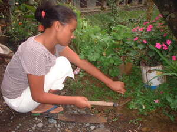

hilamun 
/hilamun/
Var.1: ilamun
v_rt.
“weed”
1.
n.
(hilamunen/ilamunen, -en) (any type of) grass
Ka hilamunen iyan ka langun ne klasi te kenè ne derakel wey kenè egkekayu, wey warè ipamula ne egtubù te tanè, weyig.
Ka salibù sabeka ne kalasi te hilamunen ne egtubu diyè te kamet.
Salebu is one kind of grass growing in the farm.
Migdakupal e ka hilamunen diyè te kamet ney su nabalahad e.
The grass(es) in our farm grow thick because it is abandoned.
Spec. natal
Spec. naleg
Syn. sagbet
Eng. grass; weed; herb
Tag. damó
Ceb. sagbut
Ilo.: ruot
OCM: Flora (137), Ethnobotany (824)
Online dict status: -
Usage level: F
adj.
(hilamunenen/ilamunenen, -en-en) the grass for weeding
Eng. the grass for weeding
Online dict status: -
Usage level: M
2.
vi.
for a group of people (egpanggilamun, impanggilamun/migpanggilamun, agent, eg><ø-paN-) to weed (e.g. a field)
Egpanghilamun key diyè te kamet su egmabenes e ka ahelayan.
We will weed in the farm because the corn plants are covered by grasses.
Eng. weed; clear
Tag. magbúnot ng damo; maggamás; maggahók
Ceb. ibton ang sagbot; mangguna; magbasok
Ilo.: agirúut
OCM: Annual Cycle (221), Agricultural Science (242)
Online dict status: -
Usage level: M
vi.
for someone (eggilamun, miggilamun/inggilamun, agent, eg><ø-) to weed (e.g. a field) (eggilamunan, inggilamunan/miggilamunan/piggilamunan, location, eg><an-)
Egpanghilamun key diyè te kamet su egmabenes e ka ahelayan.
We will weed in the farm because the corn plants are covered by grasses.
Eng. weed; clear
Tag. magbúnot ng damo; maggamás; maggahók
Ceb. ibton ang sagbot; mangguna; magbasok
Ilo.: agirúut
OCM: Annual Cycle (221), Agricultural Science (242)
Online dict status: -
Usage level: M
v.
for a field (egkeyilamunan, neyilamunan, agent, egkA><an-) to be good or enough for wedding
Eng. good, to be; enough, to be
Online dict status: -
Usage level: M
Updated by: RJH,TME,QDL,NJK
Last updated: 30/Jul/2011
This page last updated: 19/May/2012
Copyright © 2009-2010, Matigsalug Language Christian Association, Inc